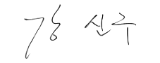

국립세종수목원은 산림생물자원의 안정적 보전과 활용 그리고 국민 여러분께
자연의 소중함과 생물다양성의 가치를 알리는 서비스를 통해 국민이 행복한 수목원을 만들어 나가겠습니다.
국립세종수목원은 온대 중부지역 산림생물자원의 수집과 보전으로 국가 생물다양성 유지와 증진에 기여하고, 도심 속 녹색문화 공간으로 다채로운 관람 및 교육, 체험 서비스를 제공하여 국민에게 행복과 즐거움을 드리기 위해 설립되었습니다.
국내 최초 도심형 국립수목원으로서 국민 여러분이 안심하고 즐길 수 있는 안전한 수목원 서비스를 제공하고, 끊임없는 혁신을 통해 변화하는 환경에 능동적으로 대응해 공공기관으로서의 역할을 충실히 이행할 것입니다.
온대중부권역 자생식물을 체계적으로 보전하고 도시의 생물다양성과 건강성 증진에 기여하며, 시민이 자연을 직접 경험하고 관찰할 수 있는 생태기반의 녹색 인프라를 마련하여 생활 속 수목원 문화를 선도하고자 최선의 노력을 다할 것입니다.
앞으로 많은 관심과 사랑을 부탁드립니다. 감사합니다.
